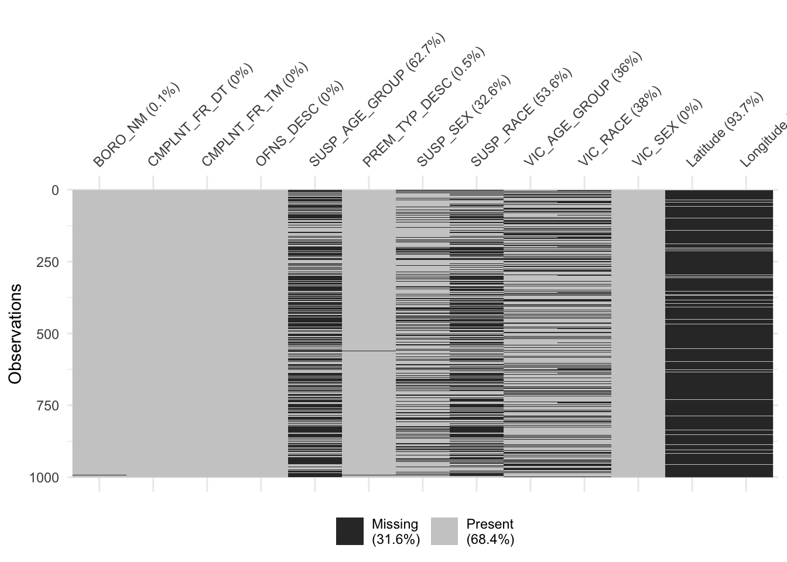
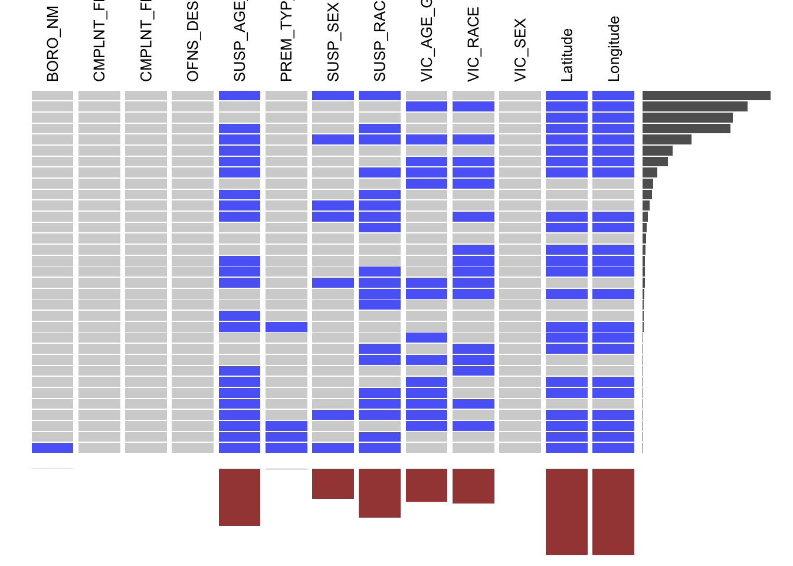
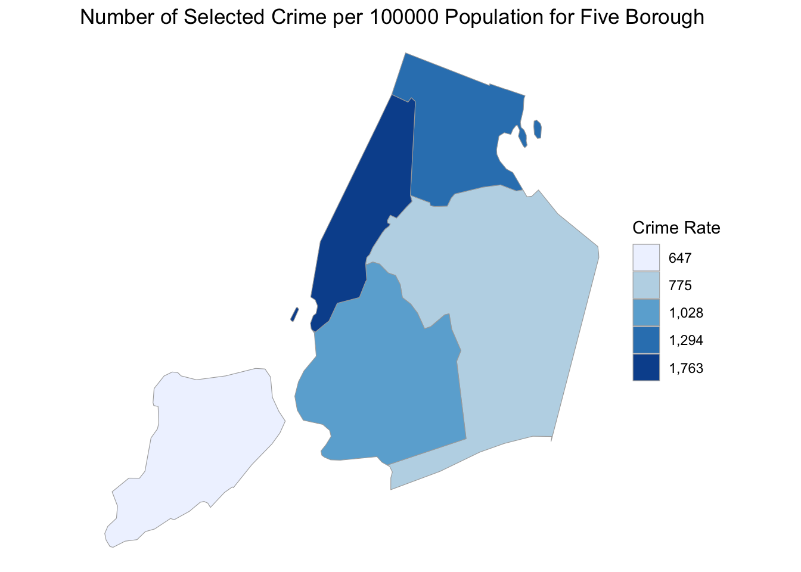
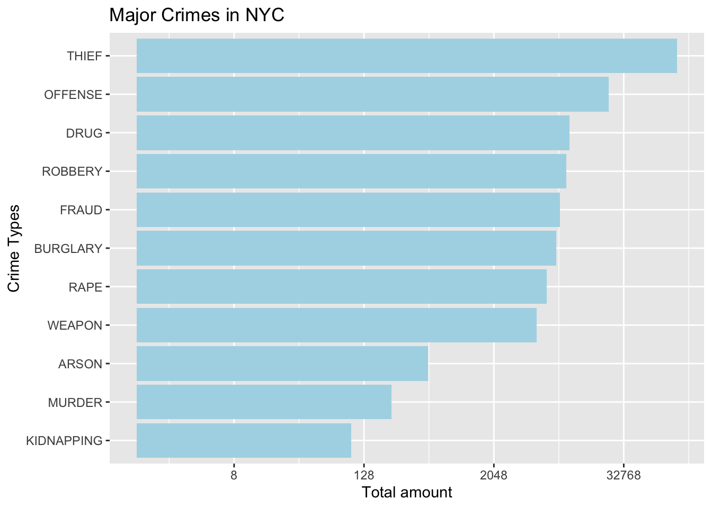
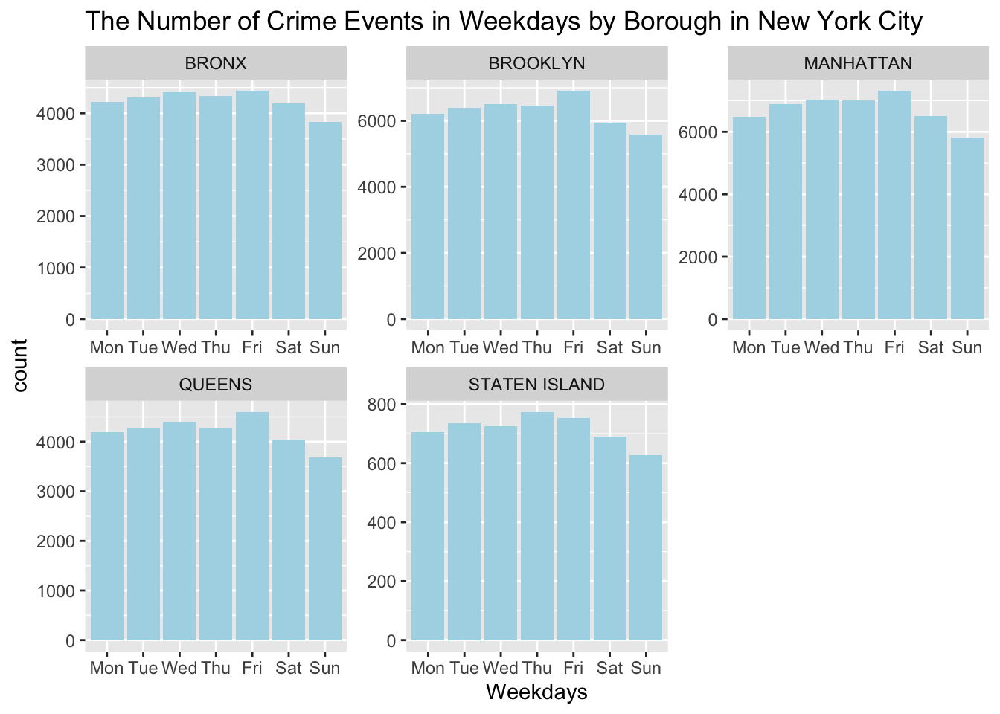
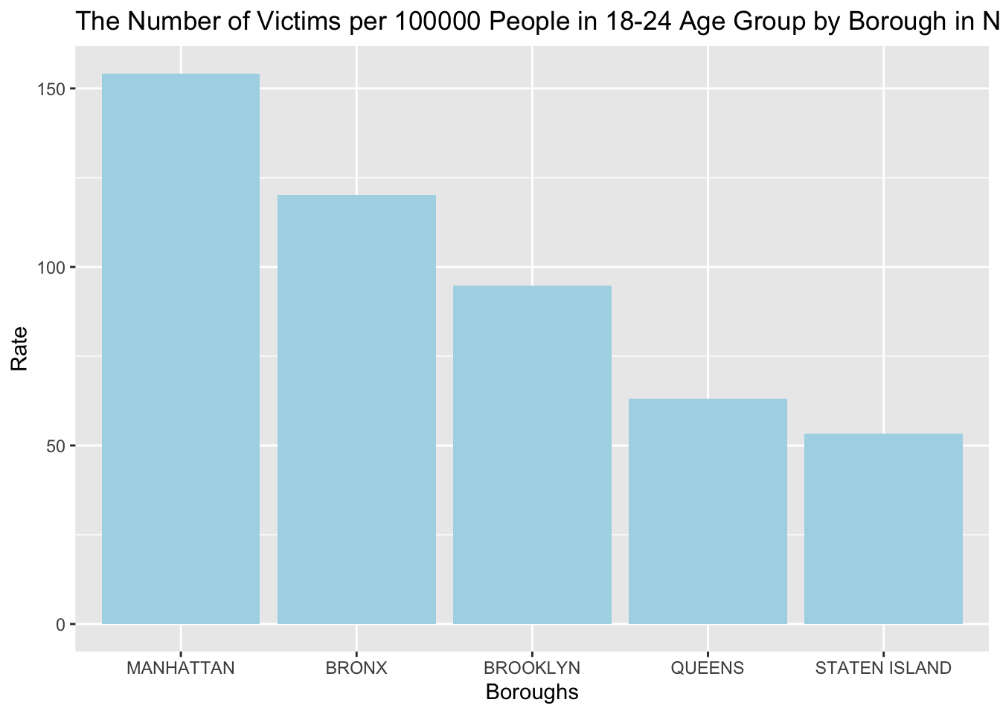
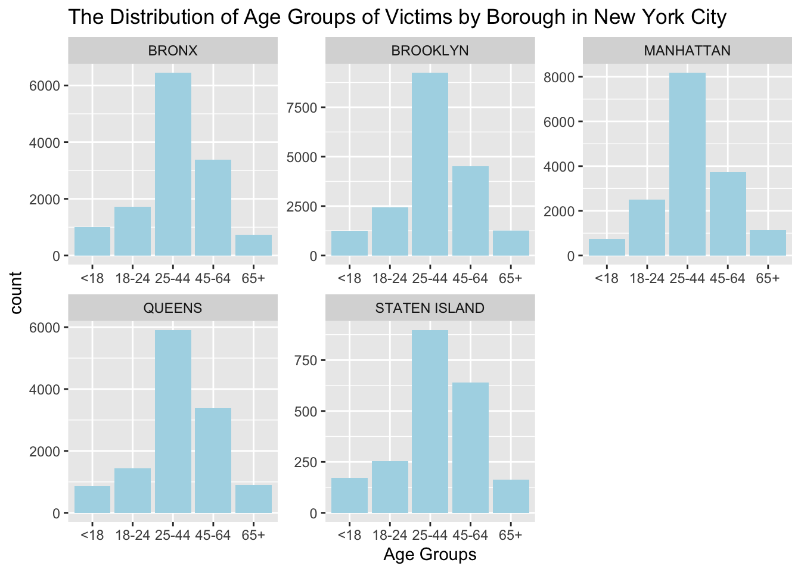
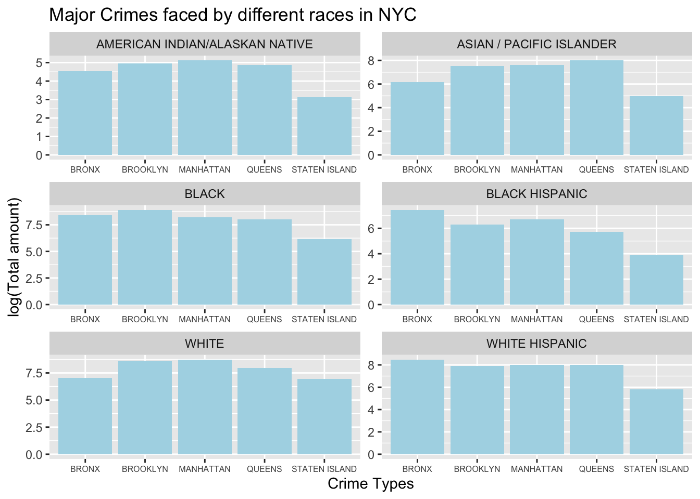

Chapter 5 Results
df1 <- data.frame(df_select[,4])
df1['count'] <- 1
df1<- df1 %>%
group_by(df_select...4.) %>%
summarize(Freq = sum(count))
ggplot(df1, aes(reorder(df_select...4.,df1$Freq), y = df1$Freq)) +
geom_bar(position = "dodge",stat = "identity",fill="lightblue") +
scale_y_continuous(trans='log2')+
coord_flip() +
labs(x = "Crime Types", y = "Total amount", title = "Major Crimes in NYC")
dangerous <-c('BURGLARY','OFFENSE','RAPE','ROBBERY','THIEF','WEAPON')
df_select <- df_select %>% mutate(OFNS_DESC = ifelse(OFNS_DESC %in% dangerous, OFNS_DESC, NA)) %>% drop_na(OFNS_DESC)
df_select <- drop_na(df_select, BORO_NM)DATA2 <- read.csv("QuickFacts.csv")
DATA2 <-DATA2[, colSums(is.na(DATA2)) != nrow(DATA2)]
DATA2 <-DATA2[,-c(2,8)]
DATA2 <-as.data.frame(t(DATA2))
names(DATA2) <- as.character(unlist(DATA2[1,]))
DATA2 <- DATA2[-1,]
DATA2 <-as.data.frame(DATA2[,1])
names(DATA2)<-'Population'
row.names(DATA2) <-c('MANHATTAN','BRONX','QUEENS','BROOKLYN','STATEN ISLAND')
ChorDF <-df_select%>%
group_by(df_select$BORO_NM) %>%
summarise(count=n())%>%
ungroup()
ChorDF <- data.frame(ChorDF[,-1], row.names = unlist(ChorDF[,1]))
ChorDF <- merge(ChorDF,DATA2,by = 0)
ChorDF$count <-as.numeric(ChorDF$count)
ChorDF$Population <-as.numeric((gsub("\\,", "", ChorDF$Population)))
ChorDF <-ChorDF %>%
mutate(rate = as.double(count/Population)*100000)
ChorDF[,'region'] <- NA
for(i in 1:nrow(ChorDF)){
if(ChorDF[i,1] == 'BRONX'){ChorDF[i,'region'] <-36005}
if(ChorDF[i,1] == 'BROOKLYN'){ChorDF[i,'region'] <-36047}
if(ChorDF[i,1] == 'MANHATTAN'){ChorDF[i,'region'] <-36061}
if(ChorDF[i,1] == 'QUEENS'){ChorDF[i,'region'] <- 36081}
if(ChorDF[i,1] == 'STATEN ISLAND'){ChorDF[i,'region'] <-36085}
}
colnames(ChorDF)[4] <-'value'
data(county.regions)
nyc_county_names = c("kings", "bronx", "new york", "queens", "richmond")
nyc_county_fips = county.regions %>%
filter(state.name == "new york" & county.name %in% nyc_county_names) %>%
select(region)
county_choropleth(ChorDF,
title = "Number of Selected Crime per 100000 Population for Five Borough",
legend = "Crime Rate",
county_zoom = nyc_county_fips$region)## Warning in min(xx[xx > upper]): no non-missing arguments to min; returning
## Inf
library(chron)
library(ggplot2)
ggplot(df_select, aes(factor(weekdays(CMPLNT_FR_DT,abbreviate =TRUE), levels=c("Mon", "Tue", "Wed", "Thu", "Fri", "Sat", "Sun"))))+
geom_bar(fill="lightblue")+
xlab("Weekdays")+
ggtitle("The Number of Crime Events in Weekdays by Borough in New York City")+
facet_wrap("BORO_NM", scale="free")
df2 <- data.frame(df_select[,1:2])
df2['count'] <- 1
df2<- df2 %>%
group_by(CMPLNT_FR_DT) %>%
summarize(Freq = sum(count))
df2 <- df2 %>%
filter(CMPLNT_FR_DT >=as.Date('2019-01-01'))
ggplot(df2, aes(as.Date(CMPLNT_FR_DT), y = Freq)) +
geom_line(color="orange")+
ylim(0, 900) +
labs(x = "Time", y = "Total amount", title = "Time series pattern in 2019")
library(tidyverse)
df2 <- data.frame(df_select[,1:2])
df2['count'] <- 1
df2 <-df2[!is.na(df2$BORO_NM), ]
df2<- df2 %>%
group_by(BORO_NM,CMPLNT_FR_DT) %>%
summarize(Freq = sum(count))
df2 <- df2 %>%
filter(CMPLNT_FR_DT >=as.Date('2019-01-01'))
ggplot(df2, aes(as.Date(CMPLNT_FR_DT), y = Freq)) +
geom_line(color="orange") +
facet_wrap(~BORO_NM, scales="free_y",ncol = 2)+
labs(x = "Time", y = "Total amount", title = "Time series pattern in 2019 in different boroughs")
#Cleveland dot plot
library(tidyverse)
cleveland <-df_select[,c('BORO_NM','OFNS_DESC')]
cleveland['Freq'] = 1
cleveland <- cleveland %>%
group_by(BORO_NM,OFNS_DESC) %>%
summarize(Freq = log(sum(Freq),2)) %>%
ungroup()
theme_dotplot <- theme_bw(14) +
theme(axis.text.y = element_text(size = rel(.55)),
axis.text.x = element_text(size = rel(.70)),
axis.ticks.y = element_blank(),
axis.title.x = element_text(size = rel(.70)),
axis.title.y = element_text(size = rel(.70)),
panel.grid.major.x = element_blank(),
panel.grid.major.y = element_line(size = 0.5),
panel.grid.minor.x = element_blank())
ggplot(cleveland,aes(Freq,fct_reorder2(BORO_NM,
OFNS_DESC == 'THIEF',Freq, .desc = FALSE),color = OFNS_DESC))+
geom_point()+
ylab('Boroughs')+
xlab('Crime Rate')+
labs(title = 'Crime rate for each type by Boroughs ',color = "Crime Type")+
theme_dotplot
picked_time <- c("07am - 11am", "15pm - 19pm", "19pm - 23pm")
crime_color <- c("#7851a9", "#800020", "#ef5927", "#0079c1", "#dac751", "#133a30")
df_select <- df_select %>% drop_na(BORO_NM)
df_select <- df_select %>% mutate(timerange = CMPLNT_FR_TM)
df_select <- df_select %>% mutate(timerange = ifelse(CMPLNT_FR_TM >= chron(times="07:00:00")
& CMPLNT_FR_TM <= chron(times="11:00:00"),
"07am - 11am", timerange) )
df_select <- df_select %>% mutate(timerange = ifelse(CMPLNT_FR_TM >= chron(times="15:00:00")
& CMPLNT_FR_TM <= chron(times="19:00:00"),
"15pm - 19pm", timerange) )
df_select <- df_select %>% mutate(timerange = ifelse(CMPLNT_FR_TM >= chron(times="19:00:00")
& CMPLNT_FR_TM <= chron(times="23:00:00"),
"19pm - 23pm", timerange) )
df_select <- df_select %>% mutate(color = timerange)
df_select <- df_select %>% mutate( color = ifelse(timerange == picked_time[1], "red", color) )
df_select <- df_select %>% mutate( color = ifelse(timerange == picked_time[2], "green", color) )
df_select <- df_select %>% mutate( color = ifelse(timerange == picked_time[3], "blue", color) )
df_select <- df_select %>% mutate(crimecolor = OFNS_DESC)
for(i in 1:length(dangerous)){
df_select <- df_select %>% mutate( crimecolor = ifelse(OFNS_DESC == dangerous[i], crime_color[i], crimecolor) )
}
df_select <- df_select %>% mutate(timerange = ifelse(timerange %in% picked_time, timerange, NA)) %>% drop_na(timerange)
#df_select <- df_select %>% mutate(timerange = ifelse((CMPLNT_FR_TM > chron(times="22:00:00")
# & CMPLNT_FR_TM <= chron(times="23:59:59")) |
# (CMPLNT_FR_TM >= chron(times="00:00:00")
# & CMPLNT_FR_TM <= chron(times="07:00:00")),
# "22pm - 7am", timerange) )ggplot(df_select, aes(x=OFNS_DESC, ..count.., fill=timerange)) +
geom_bar(position="dodge") +
facet_wrap(~BORO_NM, ncol=2,scales="free_x") +
scale_y_continuous(trans='log2') 
df_age <- subset(df_select, as.character(VIC_AGE_GROUP) %in% c("<18", "18-24", "25-44", "45-64","65+") )
ggplot(df_age, aes(VIC_AGE_GROUP))+
geom_bar(fill="lightblue")+
xlab("Age Groups")+
ggtitle("The Distribution of Age Groups of Victims by Borough in New York City")+
facet_wrap("BORO_NM", scale="free")
df_age2<-subset(df_age, as.character(VIC_AGE_GROUP)=="18-24")
#df_age2 <- df_age2$VIC_AGE_GROUP
df_age2 <-df_age2%>%
group_by(df_age2$BORO_NM) %>%
summarise(count=n())%>%
ungroup()
names(df_age2)[1] <- "Borough"
df_age2$count <- df_age2$count/ChorDF$Population*100000
names(df_age2)[2] <- "Rate"
ggplot(df_age2, aes(x=reorder(Borough, -Rate), y=Rate))+
geom_bar(stat = "identity",fill="lightblue")+
xlab("Boroughs")+
ggtitle("The Number of Victims per 100000 People in 18-24 Age Group by Borough in New York City")
df_race <-df_select[,c('OFNS_DESC','VIC_RACE')]
df_race <- df_race %>%
filter(VIC_RACE != 'UNKNOWN')
df_race['count'] <- 1
df_race<- df_race %>%
group_by(VIC_RACE,OFNS_DESC) %>%
summarize(Freq = log(sum(count)))
ggplot(df_race, aes(x = OFNS_DESC, y = Freq))+
geom_bar(position = "dodge",stat = "identity",fill="lightblue") +
facet_wrap(~VIC_RACE, scales="free", nrow = 3)+
theme(axis.text.x=element_text(size=6))+
labs(x = "Crime Types", y = "log(Total amount)", title = "Major Crimes faced by different races in NYC")
df_race <-df_select[,c('BORO_NM','VIC_RACE')]
df_race <- df_race %>%
filter(VIC_RACE != 'UNKNOWN')
df_race['count'] <- 1
df_race<- df_race %>%
group_by(VIC_RACE,BORO_NM) %>%
summarize(Freq = log(sum(count)))
ggplot(df_race, aes(x = BORO_NM, y = Freq))+
geom_bar(position = "dodge",stat = "identity",fill="lightblue") +
facet_wrap(~VIC_RACE, scales="free", nrow = 3)+
theme(axis.text.x=element_text(size=6))+
labs(x = "Crime Types", y = "log(Total amount)", title = "Major Crimes faced by different races in NYC")